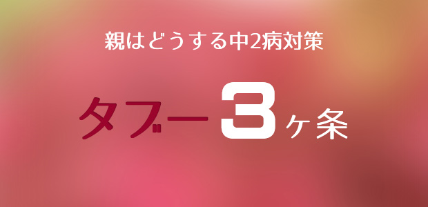

前回の中2病の続きです。
今回は、思春期特有の病、中2病（反抗期）への親の対処法について書きますが、その前にまず前提として次のことを押さえておいてください。
アイデンティティを求めて試行錯誤する
前提その1です。
思春期とは人生で一番ヘンな時期である！
変というのは、思春期以前や思春期以後の人生と比べてその時期（13、14歳ごろ～15、16歳ごろ）だけ、一番その人らしくない時期という意味です。
皆さんも思い出してみてください。
小学生の頃と大人になってからの自分は、性格や言動などちゃんとつながっている気がしませんか？
それに比べて中学生の頃の記憶は何となくボヤけているというか、あいまいだったりしないでしょうか。
そもそも記憶自体がはっきりしないかも知れません。
「アレはほんとうに自分だったのか？」
という感覚。
中には思春期のころの自分の言動を思い出して恥ずかしい思いをする人もいるでしょう。
今の自分とは別人のような感じ。
思春期というのは、それまでの自分を一度バラバラに解体して新たに「大人としての自分」を再構成する時期。
いわばサナギから脱皮してチョウになる。
そんな時期だからです。
大人としての自分。そこにはどんな可能性があるのか。新たなアイデンティティを求め模索する。様々な可能性を試してみたくて時には危ない橋を渡る。
そのためには、いったん古い自分を解体する必要があるのです。そうして様々な「人格」を演じ、再度統合していく過程が思春期なのです。
だからこの時期「その人らしくない」ふるまい、言動が表れてくるのです。
子どもにとってもこの試行錯誤はけっこう大変な作業なのです。
親も子どもから「気づき」を得るチャンス
前提その2です。
子どもの思春期は親も試されるときである。
子どもの思春期。
実は親にとっても人生の折り返し点にあたります。それまでの人生で握りしめてきて、もう役に立たなくった価値観や観念を点検して、生き直しを図る時期なのです。
だいたい30代後半～50代にかけて。
そう、ちょうど思春期の子どもをもつ親がその年齢に該当します。
心理学者の河合隼雄はこの時期を人生における「思秋期」と名付けました。
思秋期の親は不安定になりやすい。
「このままの人生でよいのか」
「そろそろ新しいことにチャレンジしなくては」
「仕事やプライベートでも何か行きづまりを感じる」
要するに親も自分の問題と向き合う時期に入っているということです。
思春期の子どもと思秋期の親。この二者がひとつ屋根の下に暮らしているとドラマが生まれやすいのです。
たとえば、子どもが反抗したり問題行動を起こすときなぜか一番親の嫌がることをする。
潔癖な親にはダラしない行動。
積極性を求める親には無気力な態度。
勉強してほしいと思っている親にはわざとのようにヤル気を見せない。
門限を厳しく言う親には時間にルーズ…など。
こういうとき親は、自分が大事だと思っている価値観そのものを一度疑ってみる必要があるかも知れません。
たとえば子どもが「高校なんか行かないで就職する」などと言った場合、親が学歴に執着していないか、心の中をのぞいてみる必要があります。
親自身が自分の親からうえつけられた価値観や常識を疑いなく持ち続けてきただけではないか。
そんな価値観を心の底では必要ないと感じていたり、負担に思っているなら当然子どもは敏感に察して、その偽善性に反発するのです。
つまり子どもの思春期（中2病）は、親の生き方や信念をゆるがし、そのことによって親も大切な気づきを得ることがあるのです。
その意味で子どもの思春期は単に子どもだけの問題にとどまらず、親自身の生き方にヒントを与え、重要な学びを得ることができるチャンスだといえます。
親も試されているわけですね。
中2病 3つのタブー
さて以上のことを前提に、親の中2病対策について述べます。
まず、してはいけない3つのタブーについて。
1 子ども扱いしてはいけない
中2病は前回も言ったように「大人になりたい自分」と現状のギャップから様々な症状を発症しているわけです。
なので「子どもとして扱われる」ことは、子どもにとって屈辱以外の何物でもないので注意しましょう。
実際、中学2～3年になると彼らは親が考える以上に大人です。むしろ親の方が「いつまでも子どもであって欲しい」という無意識の願望にとらわれています。
「ウチの子はまだまだ子どもだ」と思う親は、子どもの実像を正確に見ていない可能性があります。
昔と違い、今の子たちはスマホの機能をうまく使いこなしネット情報など親より多くの「知識」をもっています。
親の方が「何でも知っている」という前提での上から目線は、子どもたちの心を動かしません。
むしろ彼らがよく知っていること、興味のある分野にこちらも関心をもって「教えてもらう」というくらいの姿勢の方が会話が進んだりします。
私も中学生の息子たちが語る、音楽の話やら友人・教師に対する批評やらを楽しんで聞いています。
彼らの「鋭い見識」は、我々大人や社会に対する「的確な真実」を含んでいることも多く、大変おもしろく興味深いものです。
皆さんも心を開いて子どもたちとの会話を楽しんでみてはいかがでしょう。きっとたくさんの気づきがあります。
2 お説教でコントロールしてはいけない
一番やりがちなミスです。
親は子どもの行動を正すのに「お説教」という手段を使おうとします。
よく面談などでお母さん方が「いつも言ってるんですけどねぇ。なかなか直らなくて…」と嘆くのを聞きます。
この「言ってるんですけど」は全く無意味な行為だと気付いて欲しいのです。
子どもの言動や態度にシビレを切らして、ついグチっぽく言ってしまう気持ちは分かります。
しかし「言葉」では子どもをコントロールすることはできません。「言えば改善される」はまずないと思ってください。ますます逆の目が出ます。
特に相手は中2病患者です(笑)
子どものマイナスに目を向けるのではなく、子どものプラスにこそ注目しましょう。
先にも話したように子どもは、アイデンティティを求めて試行錯誤しています。子どもなりに内面に色々な悩みを抱え、自分がどうあるべきか苦しんでいるものです。
「じゃ何も言うなってこと？」
「言わなかったらますます悪い方へ行くんじゃないですか！？」
そう心配する親が多いのです。
「言わなかったら悪い方へ行くのでは」
「だから言わずにいられない」
そういうご自分の気持ちにこそまず気づいてください。
その思い。その感情は自分の内面のどこからやってくるのか。
そこに愛はあるのか。そしてもし自分が「愛」そのものなら、子どもにどう向き合い語りかけるのか。
そこを良く考えてください。
3 子どもの言動にリアクション（反応）してはいけない
何度も言いますが、この時期子どもたちは親の嫌がることを言ったりやったりするものです。先の「高校行かないで就職する」もそうですが、塾やめたいとか勉強なんか何のためにやるんだなど枚挙にいとまありません。
多くの親はあわてふためき、必死で説得しようとします。
反応（リアクション）したわけですね。
これが一番よくないのです。
「どうしよう」「育て方が悪かったのかしら」
「大変なことになった」
こんなふうにパニックになったり自分を責めたりする必要はありません。
冷静になってください。
対策を講じようとする必要はありません。
それも反応だから。
子ども自身も決して深く考えて言っているわけではないのです。
親や世間の敷いたレールから少し外れてみたいという衝動があるだけです。これも形を変えた「自立への欲求」です。
だから親は、子どもの言葉を冷静にいったんは受け入れましょう。受け入れるというのは肯定することではありません。ただ、
「フ～ン そんなこと考えてたんだ」
というように、価値判断や感情を交えずに相手の言葉そのものを、その通り受け取るのです。
否定も肯定もせずに。
その上でもし子どもが聞く耳を持っているようなら、このように応答します。
「あなたが本当に考えた末にそうしたいなら反対はしない。だから良く考えてね」
あるいは、子どもが信頼する大人 ―学校の先生とか塾の先生、親戚のオジさんなど― に相談してごらんと勧めてみます。
この時期の子どもは、親の言うことより尊敬できる第三者の言うことを聞くものだからです。
このとき親はフリをするのではなく、本当に心からこう思っていてください。できるだけニュートラルな（中立）な立場に立って「子どもの言うことにも一理あるかも知れないな。どっちに転んでも子どもを信じよう」と。
こうなると子どもも真剣に考えざるを得ません。問題の多くは自ずと解決するでしょう。
大切なのはリアクションではなくレスポンス（応答）なのだと心得ましょう。
次回は私が実際に出会ってきた中2病（思春期）の子どもたちとのエピソードを交えながらお話をしたいと思います。